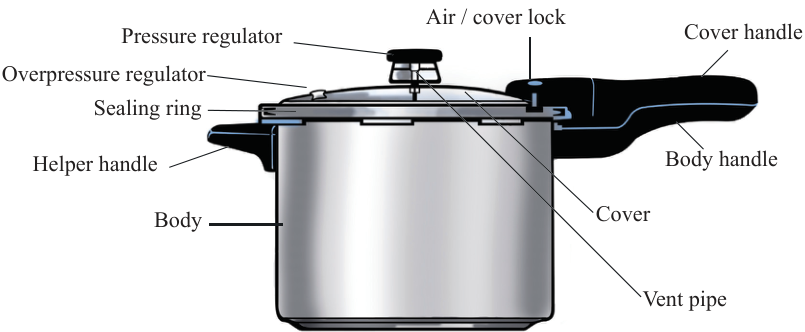

Methods of cooking pulses and nuts
Several methods can be used for cooking pulses, depending on the type of pulse and the desired outcome. Pulses can be cooked by boiling, stewing and pressure cooking. Nuts are delicious and nutritious ingredients that can be enjoyed in various ways; Thus, they can be cooked in different ways such as frying, roasting and boiling.
Pressure cooking method: This method of moist heat uses a pressure cooker to cook food under high-pressure steam. The food and a reasonable amount of water, depending on the type of food, are put in the pressure cooker and covered with its special tightly fitting lid. As water boils, steam is produced. This process increases the pressure inside the cooker. Higher temperature and pressure cook the food very quickly. During cooking, the cooker can regulate and maintain the pressure required to cook the food. After cooking is complete, the pressure cooker is left for a few minutes to lower the steam pressure so that the vessel may be opened safely. Suitable pulses for this method include dried beans, chickpeas and lentils. Figure 6.4 shows a pressure cooker.

Each component of the pressure cooker functions as follows:
Pressure regulator: This maintains the pressure required to cook food.
Vent pipe: This allows excess steam to escape so as to maintain the required internal pressure.
Air vent or cover lock: This automatically releases air from the pressure cooker.